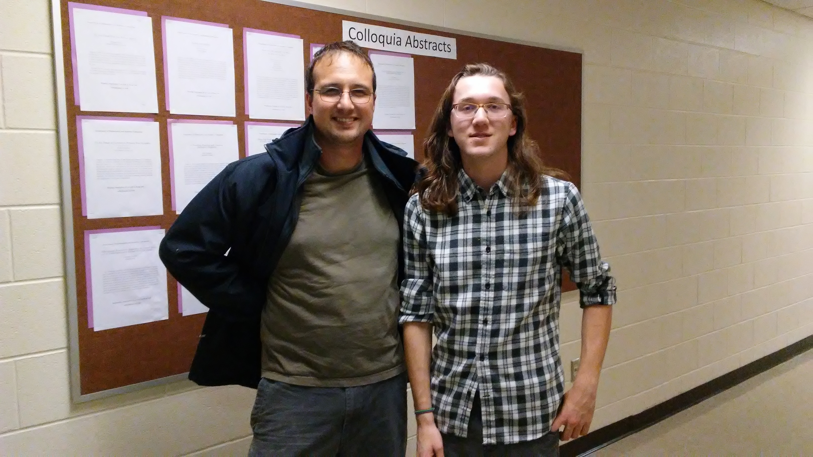

In Summer 2016 (and beyond) I worked with Ian Hill.

We spent 8 weeks that summer working on various problems related to Smith normal forms of matrices attached to graphs.
Most of Ian's time was spent working on his conjecture as to the structure of the critical group of
the Kneser graph on 2-subsets of an n-element set. Ian took an elementary approach using chip-firing on combinatorially defined substructures of the graph and was able to show his conjecture held for several cases; however, for reasons we could not
initially understand the approach would fail to generalize.
After spending much of the academic year reading about modular representations of the symmetric group, we were able to
solve our problem in early summer 2017 using a different approach. Approaching the problem via submodules of the permutation module
on 2-subsets also made clear how various arithmetic conditions on n could affect the final answer.
Ian gave several talks on this work, including at the JMM 2017. See our final paper here.
Back to my homepage